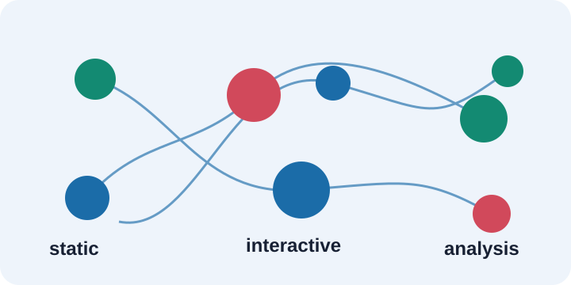

Documentation
DataViz
A comprehensive Python visualization package organized by analysis category, with static matplotlib/seaborn charts, interactive Plotly charts, typed helper APIs, and module-specific analysis workflows.

What You Can Build
Exploratory Analysis
Use univariate, bivariate, multivariate, and EDA modules to understand columns, relationships, distributions, missingness, and outliers.
Model Diagnostics
Use regression, classification, clustering, and XAI pages to inspect model behavior, predictions, metrics, and explanations.
Process Monitoring
Use SPC charts, capability analysis, rule detection, and dashboards for manufacturing, operations, and quality workflows.
Custom Extensions
Use utility and helper functions to build project-specific visualizations that follow the package conventions.
Quick Start
import dataviz as dv
ax = dv.histogram(df["sales"], bins=30)
fig = dv.scatter_plot_interactive(df["height"], df["weight"])
profile = dv.auto_profile("sales", data=df)
dashboard = dv.spc_dashboard_interactive(process_values)Documentation Structure
This static site mirrors a MkDocs-style documentation layout: a persistent navigation sidebar, user guide, API index, examples, module pages, and intentionally blank future pages.